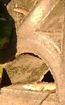
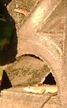

Free talk 雑談 .
（353）蜂の巣余話 トカゲ ＞クモやトカゲやコオロギなら、たくさん飼ってます。(~o~) これが証拠(笑)  昨日（12,010.10.01）の昼 庭に出たら、隣家との境のブロック塀をトカゲが這ってた。みていると、ブロック塀の飾り窓にもぐり込んでから こっちに顔を出した。 よく見ると飾り窓下の部分に、一回り大きなトカゲが寝そべっている。 “おぉ、これは証拠になる”と、たまたま持っていたK帯でパチリ。 それにしても、いっぺんに２匹 見たのは初めてだ。
＞クモやトカゲやコオロギなら、たくさん飼ってます。(~o~) これが証拠(笑)  昨日（12,010.10.01）の昼 庭に出たら、隣家との境のブロック塀をトカゲが這ってた。みていると、ブロック塀の飾り窓にもぐり込んでから こっちに顔を出した。
よく見ると飾り窓下の部分に、一回り大きなトカゲが寝そべっている。 “おぉ、これは証拠になる”と、たまたま持っていたK帯でパチリ。 それにしても、いっぺんに２匹 見たのは初めてだ。
以前へ 以降へ 目次へ